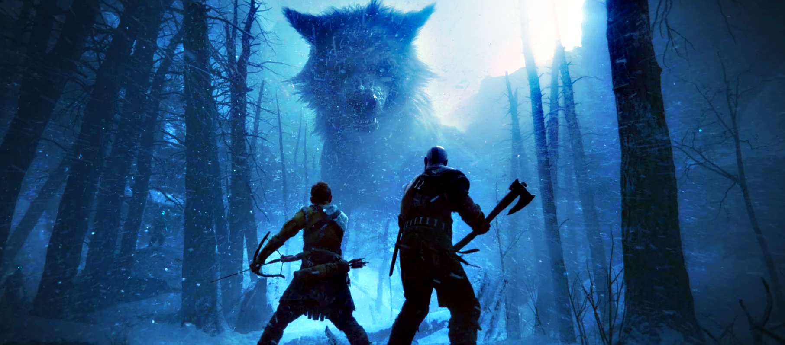

<html lang="pt-BR"></html>

<head>
        <meta charset="UTF-8">
        <meta name="viewport" content="width=device-width, initial-scale=1.0">
        <link rel="stylesheet" href="style.css">
        <link rel="preconnect" href="https://fonts.googleapis.com">
    <link rel="preconnect" href="https://fonts.gstatic.com" crossorigin>
    <link href="https://fonts.googleapis.com/css2?family=Gowun+Batang:wght@400;700&family=Ruslan+Display&display=swap"
        rel="stylesheet">
        <title>Humans and Dragons</title>
</head>

<body>
        <main>
                <div class="passo ativo" id="passo-0">
                        
                        <p>EM UM REINO ONDE OS DRAGÕES E HUMANOS COEXISTEM, UM JOVEM GAROTO CHAMADO KIAN DESCOBRE QUE POSSUI A ESSÊNCIA DE UM DRAGÃO DENTRO DE SI. APÓS PERDER SEUS PAIS EM UMA MISSÃO QUE FALHOU, KIAN ACABA PERDENDO O CONTROLE E DESTRUINDO POR COMPLETO O BATALHÃO DE SOLDADOS DO REINO VENHERIAN, O POBRE GAROTO SE VÊ PERSEGUIDO POR AQUELE REINO QUE DEVERIA LHE ACOLHER, MAS ACABA VAGANDO SOZINHO E EM BUSCA DE VINGANÇA E DESTRUIÇÃO. COM O PASSAR DO TEMPO KIAN ENCONTRA ANGRIBHOR, UM DRAGÃO SOMBRIO QUE SE TORNA SEU MENTOR. JUNTOS, ELES FAZEM AS REGRAS QUE DEVEM SER SEGUIDAS PELOS MONARCAS.</p>
                        <button class="btn-proximo" data-proximo="1">COMEÇAR</button>
                       
                </div>
                <div class="passo" id="passo-1">
                        
                        <p>VOCÊ INICIA SUA JORNADA DENTRO DE UMA RAVINA CHEIA DE ESPADAS QUEBRADAS, E COMEÇA A SER INTIMIDADO POR UM LOBO GIGANTE, OQUE VOCÊ FAZ!?</p>
                        <button class="btn-proximo" data-proximo="2">COMEÇO UMA LUTA</button>
                        <button class="btn-proximo" data-proximo="3">FAÇO AMIZADE</button>
                </div>
                <div class="passo" id="passo-2">
                        
                        <p> VOCÊ TEM O AZAR DE LUTAR CONTRA GARMEM, O LOBO DEVORADOR DO MUNDO MORTAL. GOSTARIA DE REINICIAR?</p>
                        
                       
                </div>
                <div class="passo" id="passo-3">
                        <p>GARMEM SÓ ESTAVA COM FOME E VOCÊ DECIDE ALIMENTÁ-LO COM A ÚNICA CARNE QUE POSSUI. ELE AGRADECE E SAI CORRENDO, OQUE VOCÊ FAZ?</p>
                        <button class="btn-proximo" data-proximo="4">IR ATRÁS</button>
                        <button class="btn-proximo" data-proximo="5">IR ATRÁS DE MAIS COMIDA</button>
                </div>

                <div class="passo" id="passo-4">
                        <p>VOCÊ SE ENCONTRA COM ANGRIBHOR, O DONO DE GARMEM, ELE ACABA SE INTERESSANDO POR VOCÊE DECIDE TE TREINAR PRA DESPERTAR SUA PROPRIA BESTA.</p>
                        <button class="btn-proximo" data-proximo="6">ME RECUSO</button>
                        <button class="btn-proximo" data-proximo="7">DECIDO TREINAR</button>
                </div>

                <div class="passo" id="passo-5">
                        <p>VOCÊ ENCONTRA UMA GRANDE BOLSA DE COURO CHEIA DE COMIDA, VOCÊ DECIDE PEGAR ESSA BOLSA PARA VOCÊ, MAS ACABA SENDO ATACADO POR UM DRAGÃO, OQUE VOCÊ FAZ??</p>
                        <button class="btn-proximo" data-proximo="8">SE ESQUIVA</button>
                        <button class="btn-proximo" data-proximo="9">ME ENTREGO</button>
                </div>

                <div class="passo" id="passo-6">
                        <p>Continua</p>
                </div>
                </div>

        </main>
        <script src="script.js"></script>
</body>

</html>